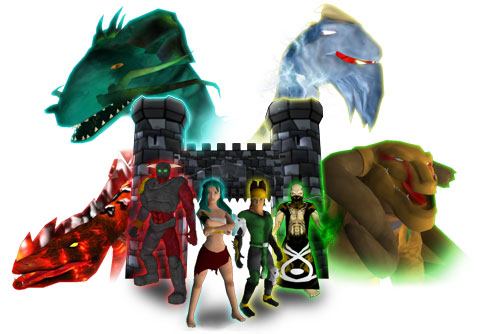

The Creation of the Dragons
Dragon Master Spell Caster is set in the magical world of Nakiha. This fantastical world was once ruled by the Dragon Lords. Formed from the most powerful forces; the might of the Earth, the irresistible force of Water, the burning intensity of Fire and the explosive energy of the Storm, the Dragons were the source of all magic. From the Dragon Lords all Dragons were born, and through the creation of their Dragon Kin, the Lords diminished and returned to their elements.
The Banishment of the Dragons
The dawn of mankind marked the ending of the rule of the dragons. The dragons; impossible to tame, fearless and deadly, battled against man for supremacy of the world. Man, most cunning of all creatures, used the dragon’s own magic against them. Harnessing the power of Earth, Water, Fire and Storm the races of man banished the dragons to the uninhabitable great ice wastes.
Man, fearful of the power they had discovered, bound the knowledge of how to control dragons and their magic within four Dragon Tomes. These great books were entrusted to the four major ruling powers of Nakiha. The Tome of Talon, containing the secrets of Storm magic, was guarded by the wealthy kingdom of Arkhoniar. The Tome of Flame, containing furious Fire magic went to the sister kingdom of Daeroviar. The Tome of Scale, showing the way of Water magic went to the vast empire of Serengania. Finally, the Tome of Bone and the mysteries of Earth magic were kept safe by the wise nation of Andera.